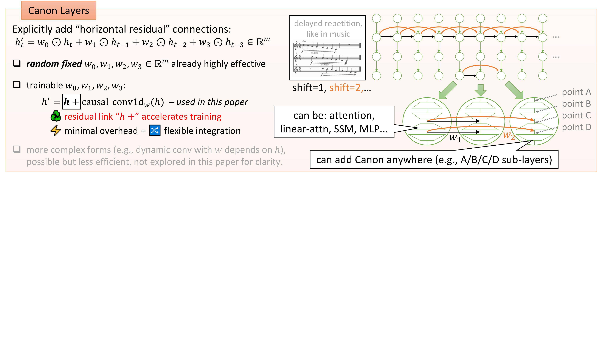

General form:
$$h'_t = w_0 \odot h_t + w_1 \odot h_{t-1} + w_2 \odot h_{t-2} + w_3 \odot h_{t-3}$$
Residual form (used in practice):
$$h'_t = h_t + \text{causal\_conv1d}_w([h_t, h_{t-1}, h_{t-2}, h_{t-3}])$$
- Musical analogy: Pachelbel’s Canon — overlapping melodies at fixed temporal delays
- Implementation: 1-d causal depthwise convolution, kernel size 4
- Residual: $h' = h + \text{causal\_conv1d}(h)$ preserves vertical gradient paths
- Even random fixed weights already produce large improvements!
Analogy: Vertical residual ($h' = h + f(h)$) transformed deep learning. Horizontal residual ($h'_t = h_t + g(h_{t-k})$) transforms sequence modeling.

Canon layers: horizontal residual links between neighboring positions (plots.pdf p.6)